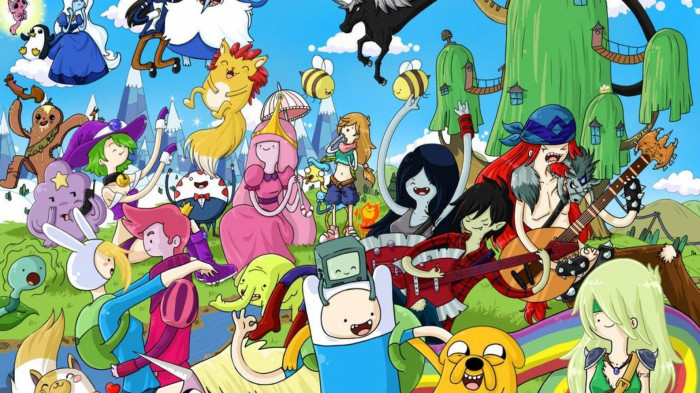

ADVENTURE TIME
Adventure Time is an American fantasy animated television series created by Pendleton Ward for Cartoon Network and distributed by Warner Bros. Domestic Television. The series follows the adventures of a boy named Finn and his best friend and adoptive brother Jake a dog with the magical power to change size and shape at will. Finn and Jake live in the post-apocalyptic Land of Ooo, where they interact with Princess Bubblegum, the Ice King, Marceline, BMO, and others. The series is based on a 2007 short film that aired on Nicktoons.